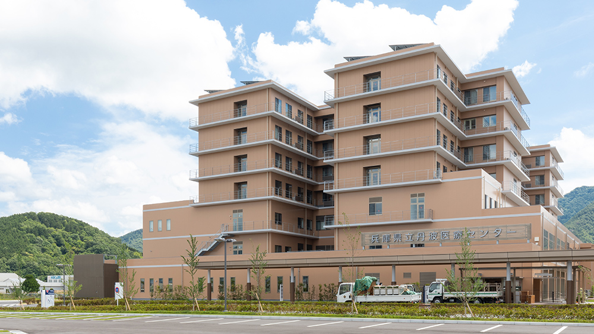
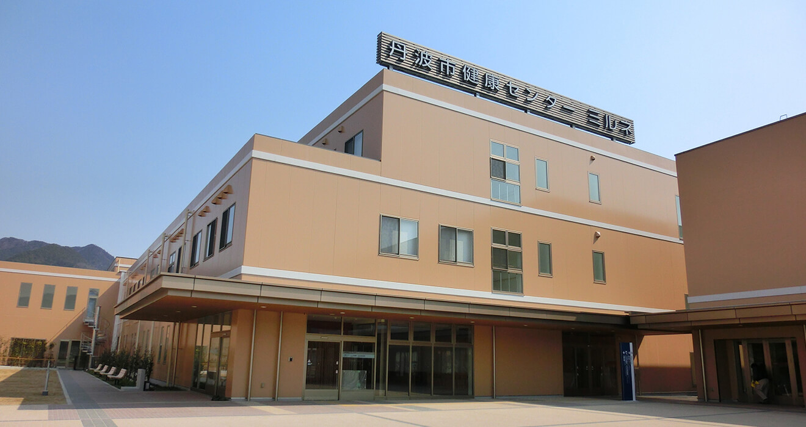

📍 プログラム紹介
兵庫県地域医療総合診療プログラムは、近畿地方最大級の総合診療専門医育成プログラムです。
基幹病院である兵庫県立丹波医療センターは丹波地域の中核病院であり、急性期医療と地域医療の要を担っています。
🏥 特徴
- 敷地内にある 丹波市ミルネ診療所 との連携により、急性期から在宅医療まで一体的に学べる
- 病棟業務と同時に外来・訪問診療の経験が可能
- 総合診療に情熱を持った仲間とともに学べる環境
🎥 プログラム紹介動画
🏞 病院・診療所の写真
 📬 お問い合わせ
兵庫県立丹波医療センター 総務課
Email: soumu@tmc.hyogo.jp